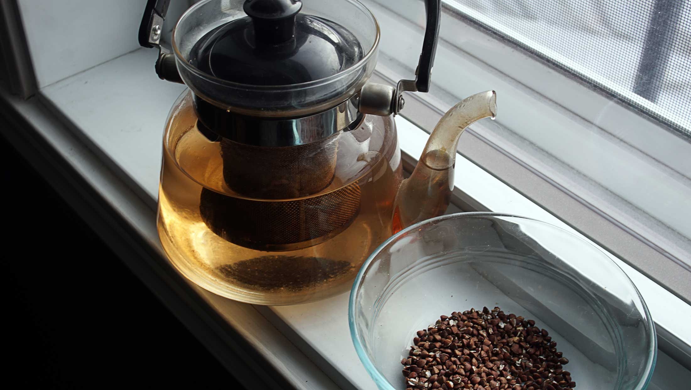
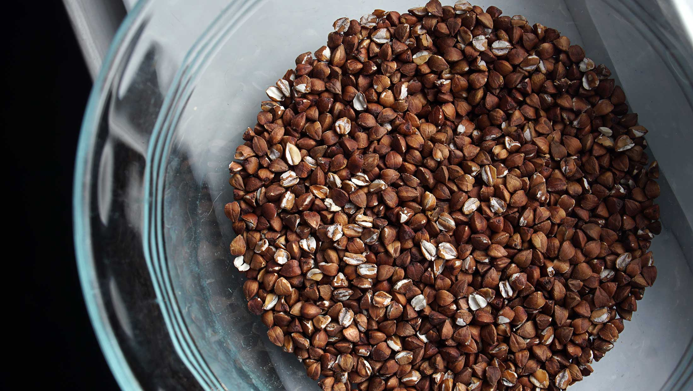

buckwheat tea
1 teapot — 15 minutes
A friend from Japan gave us some soba cha そば茶 last month, it's something we've had before but that we never thought of making ourselves. It's a type of tea that is served in some soba shops, as a companion drink to buckwheat noodles. It has a subtle nutty flavor, and is perfect to drink after dinner, or later at night as it doesn't have any caffeine.

We roast the groats as we need them, but it's possible to prepare a larger batch ahead of time. The roasted buckwheat groats will store for a few months if kept in a cool and dry place.
Roasting a larger batch: When roasting a larger batch, use a larger pan so that the groats don't sit atop of each other. The groats must be in a single layer so they can cook evenly.
Re-using the softened groats: It's possible to re-use the softened groats by pouring more water onto them, although the flavor will not be as strong. If you like to minimize food waste, it's possible to incorporate the soft groats in other meals for bulk. For example, you can mix it into rice, cookies, breads etc.
Cooking groats using oven: You can roast your buckwheat groats in your oven. Roast them at 180 °C (350 °F) for 50 minutes, while stirring on occasion.
 buckwheat groats30 g
buckwheat groats30 g
roasting
- Bring a pan to medium heat, add 20 g (2 tbsp) of raw buckwheat groats (I used the de-hulled variety, I've never tried the hulled version as it's not available where I am).
- Toast the buckwheat groats until they're fragrant and lightly browned, all while stirring constantly. Do this for about 5 minutes. Then, lower the heat and continue to toast the groats until they turn a deep brown color (~5 minutes, depending on the temperature of the pan). Continue stirring, and watch them so they don't burn.
- Transfer to a bowl, let cool.
- buckwheat groats20 g, roasted
 water800 ml, hot
water800 ml, hot
infusion
- Add 20 g (2 tbsp) of roasted buckwheat groats into the tea strainer of a teapot, and pour 800 ml (3 cups) of hot water overtop. Let tea infuse for 5-10 minutes.
- The used buckwheat groats can be re-used in other meals. You can add it to cooked rice, pasta, or in baked goods. I like to use it to replace the oats in this cracker recipe.